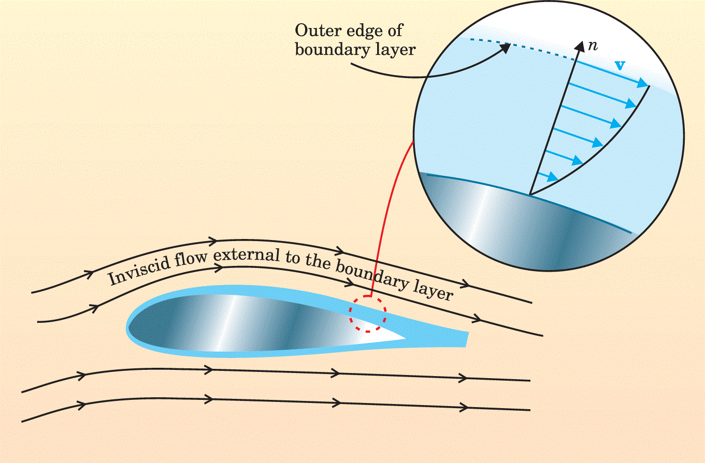

Perturbations and asymptotics
Contents
35. Perturbations and asymptotics#
In this section:
What is laminar-turbulent transition and why is it important?
How can we use asymptotic methods to study flow structure and development?
What is a boundary layer?
Problems with linear asymptotic theories - an area of active research.
35.1. General background#
Asymptotic methods are a class of mathematical techniques for solving complicated problems by exploiting the presence of a large or small parameter. These methods typically involve expanding unknown quantities using series expansion and equating terms at each order (power) in the expansion.
To be strictly accurate, we assume that the parameter appearing in the expansion is strictly infinitesimal and so the techniques may be formally justified only in extreme circumstances such as at very high Reynolds numbers or for very small amplitude waves. However, the techniques are very often used to make quantitative approximations and inferences in regimes where this assumption must be relaxed, for instance by treating \(\epsilon\sim 0.1\) as an asymptotically small quantity.
To determine what can be treated as “small” often requires an amount of heuristic reasoning, which can be justified be comparison to theoretical claims and/or experimental and numerical investigations.
In this chapter we discuss some general principles and uses of asymptotic methods, though we do not demonstrate the full mathematics, which is too involved for a first year course. Asymptotic expansion methods are also featured in chapters :numeref:`water-waves` and Section 38 to study small amplitude water and sound waves.
35.2. Perturbation analysis#
In chapter Section 32 we looked at some steady solutions. Fluid dynamicists wish to understand what happens to these steady flow profiles when they are perturbed by small disturbances. We want to know if the disturbances will grow by feeding off the energy of the main flow, or if they will be damped out by effects such as friction or swept away by convection. Understanding the dynamics of small amplitude disturbances is key to understanding laminar-turbulent transition. A laminar flow is an orderly flow characterised by fluid layers moving smoothly past one another, whilst a turbulent state is characterised by disordered, chaotic motion occurring a “cascade” of length scales. If small-amplitude perturbations are amplified, they may eventually become large enough to trigger this instability through their nonlinear interactions.
A good understanding of the features of the conditions that lead to turbulence could help with engineers learn to control transition. For an example discussion, see this video [2:30-8:05]. Sometimes the desire may be to facilitate turbulence, for instance as an efficient mechanism of heat transfer or a means of achieving liquid-jet breakup in fuel injection systems. Conversely, in aerodynamic applications turbulent skin-friction drag can be as much as ten times that of laminar flow at the same Reynolds number, and accounts for 50% of the total drag experienced by a subsonic aircraft. This means that any reduction in turbulence offers huge potential for fuel savings as well as reduction of greenhouse gases and other pollutants.
In perturbation analysis, we assume a flow profile of the following form, in which \(\underline{u}_0\) is a steady flow solution and \(\epsilon\) is a small (strictly infinitesimal) parameter:
By substituting into the equations of motion and equating coefficients of \(\epsilon\) we can obtain equations governing the perturbation dynamics. An especially important case is concerned with the dynamics of wavy (e.g. sinusoidal) perturbations and wavepackets, which emerge as particular solutions in the case of flow past a boundary. The perturbations represent tiny background fluid motions such as vibrations. By making assumptions about the length and time scales governing the perturbation dynamics and by relating \(\epsilon\) to a power of the Reynolds number, the dominating evolution mechanisms can be studied.
Example: pipe flow
An example of laminar-turbulent transition is illustrated in this video example. In the experiment, fluid under carefully controlled conditions is ran through a pipe. Dye is injected into the flow to create streaklines and the speed of the fluid is gradually increased, which is seen to result in a turbulent state. The pipe flow experiment is a classic, which was studied by Osborne Reynolds. He conducted experiments similar to the one shown, with more rudimentary apparatus, and he also developed the mathematical theory of laminar-turbulent transition in pipe flows.
We saw in section Section 32.5 that steady flow for this geometry exhibits a parabolic profile. The results of the linear perturbation theory suggest that the flow should remain stable up to very large Reynolds numbers, meaning for flow speeds that are very fast. However, very carefully controlled experiments have indicated that a turbulent state in pipe flows occurs at much lower Reynolds numbers than what the linear theory predicts, suggesting that a nonlinear theory is required.
35.3. Matched asymptotics#
We have seen that under certain conditions we can make mathematical progress by approximating the full NS equations with simplified versions. Up to now we assumed that any approximations such as neglecting viscous effects have been valid throughout the entire flow. However, our assumptions may break down in some regions of the fluid and lead to inconsistencies. For example, it is now well-known that we cannot realistically treat fluid close to a boundary such as a wall as inviscid. However, the inviscid approximation may be a good one elsewhere in the fluid and we do not want to abandon it!
The theory of matched asymptotics provides a formal framework for separating the fluid geometry into different regions or layers where different approximations may be valid. Within each layer, variables in the full non-dimensional NS equations are related to powers of the \(\mathrm{Re}\) by scaling arguments based on physical assumptions such as the distance to a boundary. The different scalings used in each layer result in balancing different physical effects in the equations.
Although the history of matched asymptotics is strongly associated with fluid dynamics, it has wide applications to areas including quantum mechanics.
Two important historic paradoxes that can be addressed using the theory of matched asymptotics are presented below. The case investigated by Prandtl is especially important and celebrated, as it ushered in a whole new era of fluid dynamics based on boundary layer theory. Boundary layers are ubiquitous in fluid dynamics, as they occur whenever a viscous fluid meets a boundary. This could include the interface between two fluids such as between a liquid jet and surrounding air. The dynamics and stability properties of boundary layers are an extremely active area of research.
We will not study the mathematical techniques of matched asymptotics as it is a very involved subject, which is often first encountered in graduate level courses.
35.3.1. Stokes’ paradox#
Consider a cylinder placed into an oncoming highly viscous 2D fluid flow of velocity \(U\), as shown in the image below. This type of flow is known as Hele-Shaw flow.

If we define the following ratio, where \(a\) is the diameter of the cylinder, then the effect of inertia will apparently be negligible near to the cylinder:
However, away from the boundary the characteristic length scale associated with changes in velocity is larger, as the flow becomes more and more uniform. Therefore the effects of inertia are more important in the outer flow regions. In fact, if the effects of inertia are neglected away from the surface of the sphere then the mathematical equations are ill-posed and it becomes impossible to satisfy appropriate boundary conditions for the far-field. This is known as Stokes’ paradox.
The paradox can be resolved by taking a different approximation away from the boundary, that includes inertial terms; and blending or “matching” the expressions obtained from the inner and outer layers of fluid.
35.4. D’Alembert’s paradox#
Consider a cylinder placed into an oncoming flow, which is at high speed. Early experimenters and mathematicians did not have the techniques of high speed photography available to them, and there was disagreement about what happens at the fluid boundary. Many believed that fluid particles would “stick” to the boundary and transfer momentum, whilst others believed that the flow would move smoothly past the boundary.
Neither approach fitted well with the equations of motion. On one hand, transfer of momentum within the fluid requires viscosity, and it would be impossible to satisfy the no-slip condition at the boundary if these effects were neglected. On the other hand, it is plain from scaling arguments that for high speed flows of low viscosity fluid such as air the effects of viscosity should be much less important than inertia.
We will also see in Section 36.3 that ignoring the no slip condition results in D’Alembert’s paradox of zero drag, and zero lift - meaning that aeroplanes would never fly!
The difficulty was eventually understood by Prandtl (1904), who reasoned for the existence of a narrow region called a boundary layer, in which the horizontal velocity increases rapidly in the direction away from the plate. In this region, viscous terms are comparable in magnitude to inertial terms, and act to decelerate the flow at the surface by diffusion of momentum. The viscous solution is then matched to the inviscid solution at the edge of the boundary layer to form a composite solution that is valid throughout the entire flow field. Matched asymptotics again!
An illustration of the concept of a boundary layer is provided below. The image comes from this paper about the history of boundary layer theory, which I think is written in a way that is fairly accessible to undergraduate physicists.

{kind=link}
As a refinement of the inner and outer approximations used to define the boundary layer, it is possible to distinguish further layers or decks within the flow of some fluids, such as the well-known triple-deck theory. Doing this allows for proper treatment of the problem of boundary layer separation, which occurs when fluid within the boundary layer begins to recirculate. The mechanism of boundary layer separation involving a triple-deck theory was first understood by James Lighthill.
Sir James Lighthill
James Lighthill was Provost of University College from 1979-1989 and has a house at UCL named in his honour.
He was a British applied mathematician who generated a prolific amount of pioneering work in fluid dynamics covering a diverse range of topics such as aerodynamics, boundary layers, vortex dynamics, nonlinear acoustics, water waves, biological fluid dynamics, and locomotive dynamics such as swimming and flying. He is credited with founding the field of aeroacoustics, and he also co-founded the Institute of Mathematics and its Applications (IMA).
He also notoriously compiled a report on artificial intelligence for the British Science Research Council (BSRC), which was highly critical of the field, leading the British government to end support for artifical intelligence research in most British Universities.
For more information, see: https://www.ucl.ac.uk/lims/jameslighthill.htm
35.5. The perturbed boundary layer#
To study the stability of boundary layers, we must combine the use of matched asymptotics with perturbation analysis, which results in a relationship between the assumed size of the disturbance and the thickness of the boundary layer. For wavy disturbances, the linear (first order) theory provides a dispersion relation in which either/both the frequency or wavenumber is permitted to be complex to model spatial or temporal growth.
A well-studied example is the case of the Blasius boundary layer, which describes the developed flow profile over a flat plate. For length and velocity scales appropriate to subsonic aircraft flight, the range of relevant Reynolds numbers is on the order of a few hundred to a few thousand. In this regime the linear theory predicts that disturbances introduced near to the leading edge of the plate will experience a short period of amplitude growth as they are swept downstream by the main flow.
The predictions can be compared to experiments in which a very carefully controlled airstream is passed over a flat plate. A loudspeaker embedded in the plate can be used to produce small amplitude disturbances at selected frequencies, and downstream apparatus such as hot wire anemometers can be used to measure the evolution of these disturbances.
The theoretical predictions roughly match the experiments in the very early stages of flow evolution, but the growth rates predicted by the linear theory are too modest and do not do a good job of predicting laminar-turbulent transition. This implies that a nonlinear theory is needed, and this remains an active area of theoretical research.
It has been hypothesised that a resonant-type interaction may be responsible for “explosive growth” of small disturbances in the Blasius boundary layer [CA78]. The theory is contentious, but pragmatic investigation at finite Reynolds numbers has provided quantified estimates that appear to be a close match for the findings of experimenters [Met13].
Exercise 35.1
Find one example of fluid dynamics research that involved modelling a boundary layer, and write a tweet about it (280 characters). You could choose a piece of recent research or you could choose a historical example that you would like to bring to wider attention.
35.6. References#
- CA78
ADD Craik and JA Adam. Evolution in space and time of resonant wave triads-i. the'pump-wave approximation'. Proceedings of the Royal Society of London. A. Mathematical and Physical Sciences, 363(1713):243–255, 1978.
- Met13
SJ Metcalfe. A blow-up mechanism in boundary layer transition. PhD thesis, Keele University, 2013.